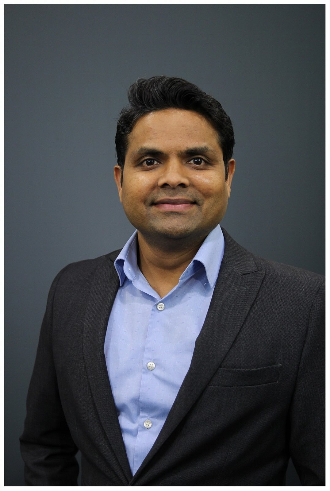

Assistant Professor of Research at the Covenant HealthCare College of Medicine at Central Michigan University — working across workplace well-being, aging-related health policies, and how the world pays for healthcare.

I’m an Assistant Professor of Research at the Covenant HealthCare College of Medicine at Central Michigan University, and a Professional Member of the National Academies of Practice (Public Health Academy, 2026 — PNAP).
My background bridges public-health policy, health administration, and physician training in an integrated allopathic and Ayurvedic medicine system (BAMS). As a health economist, my methods lean on primary and secondary data analysis, and program and economic evaluation. In 2026 I was inducted as a Professional Member (PNAP) of the National Academies of Practice’s Public Health Academy.
My research spans workplace mental health & well-being, aging-related health policies, health-care financing models, and global health.
Earlier in my career I served as a Prime Minister’s Rural Development Fellow (2012–15) with the Government of India, and I completed my DrPH at the Mel & Enid Zuckerman College of Public Health, University of Arizona.
Building and validating instruments — including the Augusta+ Scale — to measure well-being across occupational groups.
How systems finance, deliver, and adapt care as populations age.
Insurance design, out-of-pocket burden, and the disparities financing creates.
Comparing financing mechanisms across countries — with a particular focus on India and low- and middle-income settings.
Cost-effectiveness, cost-benefit, and impact evaluation using health-economics methods.
Inducted as Professional Member (PNAP) of the National Academies of Practice’s Public Health Academy.
Winner, Nobuo Maeda Global Health Award — Aging in Public Health Section, American Public Health Association (APHA).
Long-distance running has become a serious pursuit of mine — I’ve completed several half marathons and am now training for my first full marathon. There’s something clarifying about the discipline of endurance running that mirrors the discipline of good research.
Beyond the miles, I love visiting new places and understanding local culture, and — lately — turning what I see into photographs. A dedicated photography portfolio site is in the works.
View my photography portfolio →